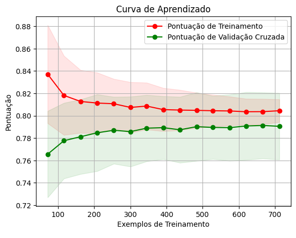
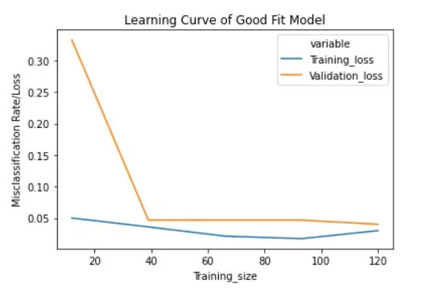

- 5 - Avaliação (Evaluation)
- Avaliação de Métricas e Interpretação do Modelo
- Função
learning_curve - Interpretação da Curva de Aprendizado
- Leia mais
- 6.0 Implantação (Deployment)
5 - Avaliação (Evaluation)
A avaliação dos modelos desenvolvidos é crucial para medir sua qualidade e desempenho. Nesta fase, utilizamos métodos como validação cruzada e métricas de desempenho para avaliar o quão bem os modelos se saem em dados não vistos. Com base nessa avaliação, podemos ajustar e aprimorar os modelos, se necessário.
Avaliação de Métricas e Interpretação do Modelo
-
Calcular métricas de desempenho, como precisão, recall, F1-score, etc., no conjunto de teste para avaliar o desempenho do modelo.
-
Interpretação do Modelo: Compreender como o modelo está tomando decisões, quais características são importantes e se está seguindo padrões esperados.
Função learning_curve
A função learning_curve é uma ferramenta do scikit-learn que permite visualizar como o desempenho de um modelo varia com o tamanho do conjunto de treinamento. Ela é útil para entender como o modelo se comporta à medida que é treinado com mais dados e para identificar problemas de underfitting ou overfitting.
Parâmetros Principais:
-
Estimator: O estimador ou modelo de machine learning a ser avaliado. Deve ser um objeto que implementa os métodos
fitepredict. -
X: O conjunto de características de entrada.
-
y: O vetor alvo.
-
Train_sizes: Os tamanhos relativos dos conjuntos de treinamento a serem usados. Pode ser especificado como uma lista de porcentagens ou como uma lista de números inteiros representando tamanhos absolutos.
-
cv: O esquema de validação cruzada a ser usado. Pode ser um objeto
KFold,StratifiedKFold, ou um inteiro especificando o número de folds. -
Scoring: A métrica de avaliação a ser usada. Pode ser uma string representando uma métrica integrada do scikit-learn (como 'accuracy', 'precision', 'recall', etc.) ou uma função de pontuação personalizada.
Saída:
A função learning_curve retorna cinco arrays:
-
Train_sizes_abs: O número de amostras usadas em cada fold de treinamento.
-
Train_scores: O desempenho do modelo no conjunto de treinamento para cada tamanho de conjunto de treinamento.
-
Test_scores: O desempenho do modelo no conjunto de teste (ou validação) para cada tamanho de conjunto de treinamento.
-
fit_times: O tempo necessário para treinar o modelo para cada tamanho de conjunto de treinamento.
-
score_times: O tempo necessário para avaliar o modelo para cada tamanho de conjunto de treinamento.
Utilidade:
A função learning_curve é útil para:
- Visualizar como o desempenho do modelo muda com o tamanho do conjunto de treinamento.
- Identificar se o modelo está sofrendo de underfitting (baixo desempenho em conjuntos de treinamento pequenos) ou overfitting (alta variação entre os conjuntos de treinamento e teste).
- Determinar se coletar mais dados de treinamento pode melhorar o desempenho do modelo.
Em resumo, a função learning_curve é uma ferramenta valiosa para entender a capacidade de generalização do modelo em relação ao tamanho do conjunto de treinamento e para orientar decisões importantes de modelagem em machine learning.
Interpretação da Curva de Aprendizado
Curva de Treinamento (Vermelha):
- Inicialmente Alta e Estável: Se a curva de treinamento começa alta e permanece estável, isso indica que o modelo está aprendendo bem com os dados de treinamento.
- Declínio Inicial: Pode haver um declínio inicial na acurácia de treinamento à medida que o tamanho do conjunto de treinamento aumenta, o que é normal pois mais dados aumentam a complexidade do problema.
Curva de Validação (Verde):
- Inicialmente Baixa e Crescendo: Se a curva de validação começa baixa e sobe, isso indica que o modelo está melhorando com mais dados de treinamento, o que é um bom sinal.
- Plateau: Se a curva de validação atinge um plateau e não melhora com mais dados, isso pode indicar que mais dados não vão melhorar o desempenho e pode ser necessário ajustar os hiperparâmetros do modelo.
 
Subajustamento (Underfitting):
- Ambas as Curvas Baixas: Se tanto a curva de treinamento quanto a curva de validação são baixas e próximas uma da outra, o modelo não está capturando bem os padrões dos dados. Pode ser necessário um modelo mais complexo.

Superajustamento (Overfitting):
- Curva de Treinamento Alta e Curva de Validação Baixa: Se a curva de treinamento é alta e a curva de validação é significativamente mais baixa, o modelo está se ajustando demais aos dados de treinamento e não está generalizando bem. Técnicas como regularização, redução da complexidade do modelo ou aumento do conjunto de dados podem ajudar.

Conclusão
A análise da curva de aprendizado ajuda a identificar o comportamento do modelo e decidir os próximos passos para melhorar seu desempenho. Dependendo do padrão observado nas curvas de treinamento e validação, você pode ajustar o modelo, coletar mais dados ou alterar a abordagem de pré-processamento e engenharia de características.
Exemplificação de Plateau
Imagine que você está treinando um modelo de regressão logística e está monitorando a acurácia da validação ao longo do tempo ou conforme você aumenta a quantidade de dados de treinamento. Inicialmente, a acurácia da validação melhora à medida que você adiciona mais dados, mas eventualmente, ela começa a se estabilizar e atinge um ponto onde não há mais melhorias significativas, mesmo com a adição de mais dados. Esse ponto de estabilização é chamado de plateau.
Leia mais
Learning_Curves Notebook: Learning_Curves_2
6.0 Implantação (Deployment)
A fase final da metodologia CRISP-DM é a implantação do modelo em um ambiente de produção. Integramos o modelo aos sistemas existentes, monitoramos seu desempenho contínuo e garantimos a adoção pela equipe de negócios.